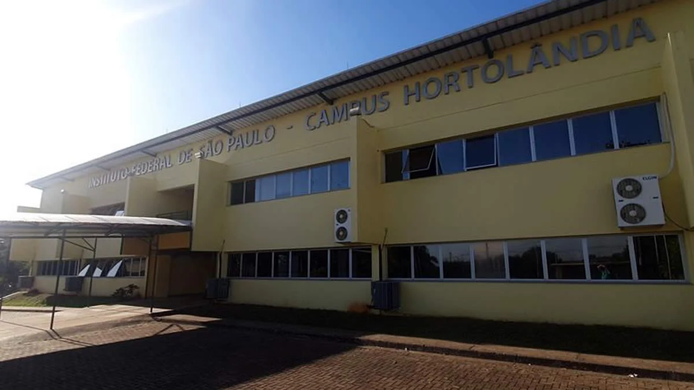

Curso de ADS - 1º Semestre
Este curso faz parte do primeiro semestre do curso de Análise e Desenvolvimento de Sistemas (ADS) do Instituto Federal de Educação, Ciência e Tecnologia de São Paulo - Campus Hortolândia. O objetivo é proporcionar aos alunos uma base sólida nos princípios da programação, engenharia de software, bancos de dados, redes de computadores e desenvolvimento web. As disciplinas são pensadas para preparar o estudante para atuar no mercado de tecnologia da informação, com uma formação prática e teórica de qualidade. Além disso, os alunos desenvolvem projetos que integram teoria e prática, reforçando habilidades essenciais para o mercado de trabalho.

Sobre o Campus Hortolândia
O IFSP Hortolândia foi inaugurado em 2007 e tem como objetivo expandir o acesso ao ensino técnico e superior gratuito e de qualidade. O campus é reconhecido pela excelência em cursos voltados para áreas de tecnologia, gestão e educação.
Entre os cursos ofertados estão: Técnico em Informática, Técnico em Administração, Bacharelado em Engenharia de Controle e Automação, Licenciatura em Matemática, e o Tecnólogo em Análise e Desenvolvimento de Sistemas.
